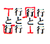

●元原稿と入力データを比較対照しながら間違いを探していく作業を、出版の世界では「校正」と呼んでいます。
■校正という作業
●校正は、「入力したデータ」が正しいかどうかをチェックする作業です。作業にあたって尊重しなければならないのは、「文章」ではなく「文字」。ふつうに本を読むときとは違って「読書の楽しみ」は捨て、「文字面だけを追う」のが基本です。極論すれば、文章の意味は理解できなくとも、正しい文字さえ把握できればよいのです。
【校正作業の流れ】
●「作業着手連絡システム」の「校正受付システム」を使って、取り組む作品を選び、申し込みを行ってください。
●全集一巻分の収録作品をすべて申し込むと入ったケースで、システムからの申請に困難を感じる場合には、reception@aozora.gr.jpに対応を打診してください。
●校正の際、参照する底本は、できるだけご自身で用意してください。
●校正用底本には、できるだけ入力用底本と同じ版のもの、もしくはより版を重ねたものを選んでください。
●申し込みのあった作品のテキスト・ファイルを、お送りします。
●プリントアウトを用いて校正する際は、できるだけご自身でプリントするようにしてください。
●底本（コピー）やプリントアウトを送ってほしい場合は、「校正受付システム」からの申し込み時に、その旨を記載してください。
●誤りの発見に加えて、青空文庫の校正作業では、ファイルの修正までお願いします。
●お送りしたファイルを、直してください。加えて、「どこをどう直したか」を示す、作業履歴ファイルを、別に作ってください。作業履歴の形式は特に定めません。以下のように、何をどう直したかがリストアップされていれば、それで結構です。
「鳴呼」と声が漏れた。→「嗚呼」と声が漏れた。
意昧のない抵抗を→意味のない抵抗を
●修正前のテキスト・ファイルを、コピーして保存しておくと、直した箇所が確認しやすくなります。
●テキスト・ファイルの直しが終わったら、圧縮をかけた修正済みテキスト・ファイルと作業履歴ファイルを、reception@aozora.gr.jp宛に送ってください。
●底本（コピー）とプリントアウトの供給を受けた場合は、指定された宛先に、一式を送り返してください。
●出版の世界には、長い歴史を通じて培われてきた「校正の基本」とでもいうべきものがあります。以下、プリントアウトを用いて校正し、その結果をもとに修正を行う場合を例に、作業のポイントを説明していきます。
【記入する色】
●プリントへの記入は、必ず赤のボールペンなどで行うようにしてください。赤を使うのは目立たせるためです。
●記入にあたっては、あとでご紹介する「主な校正記号」に載っている記号をできるだけ使うようにしてください。同じ記号を使うことによって、校正後のプリントを受け取った側が記入内容をより理解しやすくなるからです。
【書き込み方】
●修正内容が赤で記入してあっても、行間に小さな文字で書かれていたりすると、受け取った側が見落としてしまう場合があります。間違ってタイプされている箇所に消し線を引き、そこから欄外まで線を引いて、できるだけ大きく目立つように記入してください。
【原稿尊重が基本】
●校正は「原稿（底本のコピーなど）尊重」が基本。入力結果が原稿に合っているかどうかをチェックするのであり、その逆ではありません。ただし、底本も印刷物ですからそれ自体に誤植や間違いが含まれている可能性があります。「これは原稿自体の間違いではないか」と思われるものについては、赤ではなく他の色や普通の鉛筆などで記入するようにしてください。これによって、「明らかな間違い」と「疑問点」が一目で区別できます。
【校正は繰り返し行う】
●校正が一度だけで完結することはまずありません。以下のような異なった方法で繰り返し行うと、校正ミスの減少が期待できます。
１）原稿つきあわせ＝原稿（底本）とプリントとを１字１句比較しながら、ミスタイプの箇所をみつけ、修正内容を記入していきます。
２）素読み＝校正が済んだプリントを通し読みします。誤字脱字などの疑問が出た場合は、底本を参照して確認します。
３）特定の観点からの素読み＝見出しの付け方に不揃いはないか、人名の表記に不揃いはないかなど、特定の観点からもう一度素読みします。特に、OCR入力をしたファイルの場合、「タ（カタカナ）」と「夕（漢字）」などよく似た文字の読みとりミスが頻繁に生じますので、特定の文字だけを探しながら見ていく必要が出ることがあります。
●「観点読み」にあたっては、１ページごとにいくつかの観点を同時に見ていくことはやめ、「タと夕」なら全ページそれだけをチェックしていくことが大切です。複数の観点からの素読みが必要な場合には、それを繰り返します。
●「観点読み」の作業は、エディタやワープロの検索機能を使って行うことも可能です。
【再校の仕方】
●入力者校正で多量の修正が出た場合は、上記の３度の校正作業のあとに修正作業を行い、再度プリントして、最初に赤字を記入したもの（初校といいます）と新たにプリントしたもの（再校といいます）との比較・確認が必要になります。
●このとき、左に初校を、右に再校を置き、左手に青（赤以外の色）、右手に赤の筆記具を持ってチェック作業をし、チェックが終わったものは初校の赤字の上に「修正確認」を表す線を青（赤以外の色）で引いていくとよいでしょう。あとからざっと見直すだけで、チェック洩れを容易に発見することができます。
【振り返りが大切】
●素読みの途中で、原著者の熟語の表記の勘違いなど、「パターンとして繰り返されやすいミス」が見つかることがあります。そのときには、そのまま先へ進むのではなく、いったん最初のページまでもどり、その漢字や用語について最初からもう一度チェックし直すようにしましょう。
【完了後は１日寝かす】
●集中力には限りがあるもの。つきあわせ→素読み→観点読みを連続して行うと、かえって見落としが増える場合があります。校正が済んだプリントは、最低でも一晩寝かし、翌日最後の素読みを行いましょう。思わぬ発見があるはずです。
◆主な校正記号
 |
文字を削除して詰めるときは「トルツメ」と記入。削除してあとをそのまま空けるときは「トルアキ」。 |
 |
行の特定の部分から前を前行に送る。 |
 |
間違った修正を取り消し、原文のままにするときは、記入した赤字を消して「イキ（モトイキ）」。 |
 |
改行する。 |
|
|
新たに語句を挿入するときに用いる。 |
 |
字と字、行と行を入れ替える。 |
 |
ひらがなやカタカナを拗促音に変更。 |
 |
あとの行を前に送って前行とつなげる。 |
 |
拗促音文字を普通の文字に変更。 |
 |
指定の位置まで文字を移動。引っ込める記号と位置指定の記号を併用。 |
 |
行の特定の部分からあとを次行に送る。 |
 |
□は１字空きにするとき、＞は空きを詰めるときに。位置指定記号を併用。 |
◆「加工」へ｜◆作業マニュアル目次へ